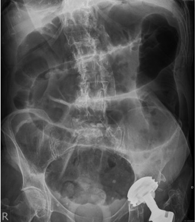

Questão 31 · Medicina Preventiva · 4000182438“A Regulação de pacientes é uma ferramenta de democratização do acesso que possibilita, por exemplo, a um paciente do município de Barreiras, oeste da Bahia, ter o mesmo direito de ser internado no Hospital Geral do Estado, localizado em Salvador, na capital do Estado, que um paciente que está na emergência do hospital. A decisão de internação será pautada na gravidade do caso e não pela proximidade do paciente. É um sistema criado para gerir vagas hospitalares e outras necessidades de pacientes dentro do Sistema Único de Saúde (SUS), utilizando critérios internacionalmente estabelecidos.” Disponível em: <http://www.saude.ba.gov.br/atencao-a-saude/comofuncionaosus/sistema-de-regulacao>. Acesso em: set. 2022. Adaptado. Por contrarreferência no sistema de Regulação em saúde entende-se a transferência do paciente, saindo da Unidade de Referência
A por falta de recursos para o atendimento pretendido.
B por dispensar maior complexidade de atendimento.
C por resolutividade completa do caso, após atendimento.
D por erro no perfil de gravidade do paciente referenciado.
Questão 32 · Medicina Preventiva · 4000182437“A Regulação de pacientes é uma ferramenta de democratização do acesso que possibilita, por exemplo, a um paciente do município de Barreiras, oeste da Bahia, ter o mesmo direito de ser internado no Hospital Geral do Estado, localizado em Salvador, na capital do Estado, que um paciente que está na emergência do hospital. A decisão de internação será pautada na gravidade do caso e não pela proximidade do paciente. É um sistema criado para gerir vagas hospitalares e outras necessidades de pacientes dentro do Sistema Único de Saúde (SUS), utilizando critérios internacionalmente estabelecidos.” Disponível em: <http://www.saude.ba.gov.br/atencao-a-saude/comofuncionaosus/sistema-de-regulacao>. Acesso em: set. 2022. Adaptado. Quanto às definições de urgência e emergência, para fins de Regulação, pode se dizer que:
A A urgência indica necessidade de atendimento imediato, em agravo de saúde pré-existente .
B A emergência indica reconhecimento de agravo com risco de vida ou sofrimento intenso.
C A emergência indica aparecimento súbito de agravo imprevisto com necessidade de atendimento imediato.
D A urgência indica agravo súbito com risco iminente de vida, necessitando de socorro médico.
Questão 33 · Medicina Preventiva · 4000182436“A Regulação de pacientes é uma ferramenta de democratização do acesso que possibilita, por exemplo, a um paciente do município de Barreiras, oeste da Bahia, ter o mesmo direito de ser internado no Hospital Geral do Estado, localizado em Salvador, na capital do Estado, que um paciente que está na emergência do hospital. A decisão de internação será pautada na gravidade do caso e não pela proximidade do paciente. É um sistema criado para gerir vagas hospitalares e outras necessidades de pacientes dentro do Sistema Único de Saúde (SUS), utilizando critérios internacionalmente estabelecidos.” Disponível em: <http://www.saude.ba.gov.br/atencao-a-saude/comofuncionaosus/sistema-de-regulacao>. Acesso em: set. 2022. Adaptado. O critério de Manchester, utilizado universalmente para priorizar os pacientes, considera:
A O tempo de espera para internação, ordenando com números.
B A gravidade geral do caso, classificando com cores.
C As necessidades de cuidados especiais, estadiando em letras.
D O número de comorbidades associadas, classificando com cores.
Questão 34 · Pediatria · 4000182435Criança, 5 anos de idade, iniciou quadro febril agudo seguido de cefaleia e mialgias. Foi levada ao Hospital de Doenças Infecto-contagiosas, onde teve o diagnóstico de meningite viral, tendo alta com três dias por apresentar-se bem na evolução. Já em casa, sete dias após a alta, passa a apresentar perda súbita de força muscular em perna direita, com acidez muscular. Em três dias não houve progressão, mas também não houve melhora. Os reflexos osteo-tendíneos estão diminuídos e a sensibilidade está preservada. Membro inferior esquerdo e demais dados do exame neurológico atual sem alterações. Quanto à vacina mais empregada no Brasil para prevenção da poliomielite, pode-se afirmar que
A é feita de vírus mortos e pode complicar com a Síndrome de Guillan Barré.
B é feita com vírus vivos, provocando complicações raras por mutação viral.
C é feita com DNA viral isolado e pode desencadear reações autoimunes .
D é feita com RNA viral isolado e pode desencadear reações autoimunes.
Questão 35 · Poliomielite · Neurologia · 4000182434Criança, 5 anos de idade, iniciou quadro febril agudo seguido de cefaleia e mialgias. Foi levada ao Hospital de Doenças Infecto-contagiosas, onde teve o diagnóstico de meningite viral, tendo alta com três dias por apresentar-se bem na evolução. Já em casa, sete dias após a alta, passa a apresentar perda súbita de força muscular em perna direita, com acidez muscular. Em três dias não houve progressão, mas também não houve melhora. Os reflexos osteo-tendíneos estão diminuídos e a sensibilidade está preservada. Membro inferior esquerdo e demais dados do exame neurológico atual sem alterações. Quanto à situação da poliomielite viral no Brasil, pode se afirmar que:
A Encontra-se erradicada, porém com taxas de cobertura vacinal reduzidas, o que pode reintroduzir a doença no país.
B Encontra-se controlada, com casos apenas episódicos, devido à baixa cobertura vacinal dos últimos anos.
C Encontra-se erradicada e, considerando os riscos vacinais, não há indicação de vacina.
D Encontra-se em fase pré-epidêmica, pois casos episódicos já indicam risco de disseminação.
Questão 36 · Diagnóstico · Poliomielite · Neurologia · 4000182433Criança, 5 anos de idade, iniciou quadro febril agudo seguido de cefaleia e mialgias. Foi levada ao Hospital de Doenças Infecto-contagiosas, onde teve o diagnóstico de meningite viral, tendo alta com três dias por apresentar-se bem na evolução. Já em casa, sete dias após a alta, passa a apresentar perda súbita de força muscular em perna direita, com acidez muscular. Em três dias não houve progressão, mas também não houve melhora. Os reflexos osteo-tendíneos estão diminuídos e a sensibilidade está preservada. Membro inferior esquerdo e demais dados do exame neurológico atual sem alterações. Quanto ao diagnóstico de poliomielite viral no quadro, pode se dizer que:
A O quadro clínico é incompatível, pois não houve contactantes com sintomas de poliomielite.
B O quadro clinico é compatível, embora a paralisia mais comum na poliomielite seja espástica.
C O quadro clínico é compatível com a Síndrome de Guillan-Barré, com quadro típico dessa condição.
D O quadro clinico é compatível e deve ser considerado como poliomielite até ser afastada a doença.
Questão 37 · Medicina Preventiva · 4000182432A proposic na perspectiva de linhas de cuidado que resguardem a integralidade da atenc Com relação às causas de mortalidade no gênero masculino, pode-se afirmar que
A a mortalidade por causas cardiovasculares é maior que as demais em todas as faixas etárias.
B as causas externas de mortalidade, entre elas a violência, predominam em todas as faixas etárias.
C entre as neoplasias, o câncer de próstata é a principal causa de mortalidade no sexo masculino.
D neoplasias são a principal causa de mortalidade a partir dos 50 anos de idade.
Questão 38 · Medicina Preventiva · 4000182431A proposic na perspectiva de linhas de cuidado que resguardem a integralidade da atenc Com relação à vulnerabilidade para doenças, quanto ao gênero, no Brasil, podemos dizer que:
A As mulheres são mais vulneráveis, em geral, do que os homens.
B Os homens são mais vulneráveis, em geral, do que as mulheres.
C Os homens têm menor mortalidade do que as mulheres para doenças crônicas.
D As mulheres têm maior mortalidade do que os homens para doenças agudas.
Questão 39 · Medicina Preventiva · 4000182430A proposic na perspectiva de linhas de cuidado que resguardem a integralidade da atenc Um dos problemas para estabelecer uma politica de saúde adequada ao homem é a via de acesso aos serviços de saúde. No caso dos homens, o acesso aos serviços de saúde ocorre por meio da
A atenção especializada.
B urgência/ emergência.
C saúde do trabalhador.
D saúde da família.
Questão 40 · Reumatologia · AIJ Artrite Idiopática Juvenil · 4000182429Menina, 5 anos de idade, é atendida na UPA com história de dor no joelho esquerdo, referindo, também, aumento de volume e limitação de movimentos, principalmente ao acordar. Relata que essa dor iniciou há 2 meses, sem trauma, evoluindo para acometimento de ombro esquerdo, joelho direito e quadris, bilateralmente. Há 15 dias, vem com envolvimento de punhos, com mesmas características, além de febre com exantema. Queixa-se de dor ocular, que “piora com luz forte” e que seus olhos ficam, permanentemente, vermelhos. Relata, ainda, dor ao mastigar e abrir a boca. Ao exame, a menor apresenta hiperemia ocular. Temperatura 38,0°C. Nota-se exantema cor de salmão em axilas e zonas de pressão. Apresenta discreta hepatoesplenomegalia. Linfonodos sem características patológicas. Nas articulações em foco, observam-se edema, calor e redução da amplitude de movimentos. Hemograma mostra 15mil leucócitos/mm³ às custas de polimorfonucleares, com 400mil plaquetas/mm³. Considerando a hipótese diagnóstica mais provável, a complicação grave mais temível é:
A Insuficiência renal crônica.
B Insuficiência hepática aguda.
C Lesão de válvulas cardíacas.
D Síndrome de ativação macrofágica.
Questão 41 · Reumatologia · AIJ Artrite Idiopática Juvenil · 4000182428Menina, 5 anos de idade, é atendida na UPA com história de dor no joelho esquerdo, referindo, também, aumento de volume e limitação de movimentos, principalmente ao acordar. Relata que essa dor iniciou há 2 meses, sem trauma, evoluindo para acometimento de ombro esquerdo, joelho direito e quadris, bilateralmente. Há 15 dias, vem com envolvimento de punhos, com mesmas características, além de febre com exantema. Queixa-se de dor ocular, que “piora com luz forte” e que seus olhos ficam, permanentemente, vermelhos. Relata, ainda, dor ao mastigar e abrir a boca. Ao exame, a menor apresenta hiperemia ocular. Temperatura 38,0°C. Nota-se exantema cor de salmão em axilas e zonas de pressão. Apresenta discreta hepatoesplenomegalia. Linfonodos sem características patológicas. Nas articulações em foco, observam-se edema, calor e redução da amplitude de movimentos. Hemograma mostra 15mil leucócitos/mm³ às custas de polimorfonucleares, com 400mil plaquetas/mm³. Considerando a febre que, usualmente, acompanha quadros semelhantes, pode-se afirmar que costuma ser:
A Diária e elevada, em picos, com retorno à temperatura normal.
B Irregular, com variação de horários e dias sem febre.
C Contínua e baixa, associada à cefaleia.
D Elevada e contínua, com prostração intensa.
Questão 42 · Reumatologia · AIJ Artrite Idiopática Juvenil · 4000182427Menina, 5 anos de idade, é atendida na UPA com história de dor no joelho esquerdo, referindo, também, aumento de volume e limitação de movimentos, principalmente ao acordar. Relata que essa dor iniciou há 2 meses, sem trauma, evoluindo para acometimento de ombro esquerdo, joelho direito e quadris, bilateralmente. Há 15 dias, vem com envolvimento de punhos, com mesmas características, além de febre com exantema. Queixa-se de dor ocular, que “piora com luz forte” e que seus olhos ficam, permanentemente, vermelhos. Relata, ainda, dor ao mastigar e abrir a boca. Ao exame, a menor apresenta hiperemia ocular. Temperatura 38,0°C. Nota-se exantema cor de salmão em axilas e zonas de pressão. Apresenta discreta hepatoesplenomegalia. Linfonodos sem características patológicas. Nas articulações em foco, observam-se edema, calor e redução da amplitude de movimentos. Hemograma mostra 15mil leucócitos/mm³ às custas de polimorfonucleares, com 400mil plaquetas/mm³. Considerando o diagnóstico mais provável, sobre a avaliação laboratorial dessa criança, é correto afirmar:
A Fator Antinuclear é sempre positivo.
B Proteína C Reativa não é exame indicado.
C VHS normal não exclui diagnóstico.
D Fator Reumatoide é positivo em mais de 80% dos casos iniciais.
Questão 43 · Pediatria · 4000182426Adolescente, sexo feminino, 15 anos de idade, é levada à consulta de rotina por sua mãe. Reluta para permitir o exame físico. Ao conversar, sem a presença materna, relata que tem se cortado com gilete nos antebraços, mas seus pais não têm conhecimento do fato pois tem usado mangas compridas para cobrir os ferimentos. Refere término de namoro com um rapaz de 16 anos de idade, com quem teve iniciação sexual, de forma voluntária. Relata fazer uso de contraceptivos e deseja saber se deve continuar. Tem obtido notas medianas na escola. De ne-se viciada em internet e jogos eletrônicos, passando mais de 6 horas por dia em uso de telas. Informa que tem poucos amigos. Ao exame físico: bom estado geral, lúcida, orientada; comunica-se pouco na presença da mãe; demonstra tristeza; fala sobre o namoro terminado, hipervalorizando a situação com conteúdo negativo. Demonstra sofrimento, autocrítica e baixa autoestima. Apresenta várias lesões cicatriciais em antebraços. Sem outros achados anormais. Com relação à demanda quanto ao uso de contraceptivos, considerando as indicações éticas da Sociedade Brasileira de Pediatria,
A está contraindicado pela imaturidade hormonal da paciente e deve ser comunicado à mãe.
B está contraindicado pela imaturidade hormonal da paciente e não deve ser comunicado à mãe.
C está indicado e é direito da adolescente usar sem informação parental e deve ser prescrito de forma adequada.
D é indicado e o sigilo deve ser quebrado, pois é dever dos parentes participar das decisões quanto à saúde reprodutiva da adolescente.
Questão 44 · Prevenção e promoção de saúde nos adolescentes · Pediatria · 4000182425Adolescente, sexo feminino, 15 anos de idade, é levada à consulta de rotina por sua mãe. Reluta para permitir o exame físico. Ao conversar, sem a presença materna, relata que tem se cortado com gilete nos antebraços, mas seus pais não têm conhecimento do fato pois tem usado mangas compridas para cobrir os ferimentos. Refere término de namoro com um rapaz de 16 anos de idade, com quem teve iniciação sexual, de forma voluntária. Relata fazer uso de contraceptivos e deseja saber se deve continuar. Tem obtido notas medianas na escola. De ne-se viciada em internet e jogos eletrônicos, passando mais de 6 horas por dia em uso de telas. Informa que tem poucos amigos. Ao exame físico: bom estado geral, lúcida, orientada; comunica-se pouco na presença da mãe; demonstra tristeza; fala sobre o namoro terminado, hipervalorizando a situação com conteúdo negativo. Demonstra sofrimento, autocrítica e baixa autoestima. Apresenta várias lesões cicatriciais em antebraços. Sem outros achados anormais. Considerando as especificidades das consultas médicas para o público adolescente, pode se dizer que
A a presença de atendente durante o exame físico não é recomendável.
B a consulta deve ter momentos com e sem a presença dos pais ou responsáveis.
C os pais não devem participar do momento da entrevista com o/a adolescente.
D a presença de atendente na sala, durante o exame físico, precisa ter concordância do/da adolescente.
Questão 45 · Medicina Preventiva · 4000182424Adolescente, sexo feminino, 15 anos de idade, é levada à consulta de rotina por sua mãe. Reluta para permitir o exame físico. Ao conversar, sem a presença materna, relata que tem se cortado com gilete nos antebraços, mas seus pais não têm conhecimento do fato pois tem usado mangas compridas para cobrir os ferimentos. Refere término de namoro com um rapaz de 16 anos de idade, com quem teve iniciação sexual, de forma voluntária. Relata fazer uso de contraceptivos e deseja saber se deve continuar. Tem obtido notas medianas na escola. De ne-se viciada em internet e jogos eletrônicos, passando mais de 6 horas por dia em uso de telas. Informa que tem poucos amigos. Ao exame físico: bom estado geral, lúcida, orientada; comunica-se pouco na presença da mãe; demonstra tristeza; fala sobre o namoro terminado, hipervalorizando a situação com conteúdo negativo. Demonstra sofrimento, autocrítica e baixa autoestima. Apresenta várias lesões cicatriciais em antebraços. Sem outros achados anormais. Indique a conduta médica adequada, definida pelas normativas éticas nessa situação, com relação à mãe e à confidencialidade da consulta, no que diz respeito aos indícios de autoagressão:
A A mãe deve ser informada no momento da consulta, sem a presença da paciente, pois há risco de vida por autoagressão.
B Caso a paciente escolha uma pessoa adulta para interlocução essa deve ser, necessariamente, seu responsável legal.
C Pode ser pactuado que a própria adolescente converse com a mãe, pois esta deve ser informada, já que há risco com a autoagressão.
D A mãe não deve ser informada, pois afetaria a autonomia da paciente, sendo o sigilo um direito do paciente adolescente.
Questão 46 · Sumário dos Tóxicos e Antídotos · 4000182423Menino, 2 anos de idade, é levado à UPA com relato de sonolência, naúseas e vômitos há 50 minutos. Após inicio do quadro, foi constatado que o menor ingeriu bolinhas de naftalina. A genitora informa ter colocado o produto, há dois dias, na gaveta que se encontrava aberta; que as bolinhas estavam em um pacote com 5 unidades, de menos de 1cm de diâmetro, e que 3 delas foram encontradas. Ao exame, criança hipoativa, hidratada, eupneica, corada, afebril. Observa-se hipersalivação. Sem outros achados anormais no momento. No caso de ocorrer a complicação, considere as opções abaixo e indique a conduta adequada:
A Administrar carvão ativado.
B Fazer lavagem gástrica.
C Administrar azul de metileno.
D Administrar atropina.
Questão 47 · Intoxicações Exógenas · 4000182422Menino, 2 anos de idade, é levado à UPA com relato de sonolência, naúseas e vômitos há 50 minutos. Após inicio do quadro, foi constatado que o menor ingeriu bolinhas de naftalina. A genitora informa ter colocado o produto, há dois dias, na gaveta que se encontrava aberta; que as bolinhas estavam em um pacote com 5 unidades, de menos de 1cm de diâmetro, e que 3 delas foram encontradas. Ao exame, criança hipoativa, hidratada, eupneica, corada, afebril. Observa-se hipersalivação. Sem outros achados anormais no momento. O paciente, em questão, pode apresentar complicação decorrente de:
A Lesões cáusticas pela acidez.
B Lesões cáusticas pela alcalinidade.
C Síndrome hipercolinérgica.
D Metahemoglobinemia com cianose.
Questão 48 · Intoxicações Exógenas · 4000182421Menino, 2 anos de idade, é levado à UPA com relato de sonolência, naúseas e vômitos há 50 minutos. Após inicio do quadro, foi constatado que o menor ingeriu bolinhas de naftalina. A genitora informa ter colocado o produto, há dois dias, na gaveta que se encontrava aberta; que as bolinhas estavam em um pacote com 5 unidades, de menos de 1cm de diâmetro, e que 3 delas foram encontradas. Ao exame, criança hipoativa, hidratada, eupneica, corada, afebril. Observa-se hipersalivação. Sem outros achados anormais no momento. Considerando o potencial tóxico do produto, e que a criança permaneceu por 8 horas em observação, sem sintomas, indique a conduta correta:
A Manter internado por mais 12 horas, verificando sintomas respiratórios.
B Manter internado por mais 48 horas, verificando sintomas neurológicos.
C Conceder alta, com retorno, após 5 dias, para realizar Hemograma e Sumário de Urina.
D Conceder alta com observação domiciliar, por 5 a 7 dias, e retorno se tiver sintomas.
Questão 49 · Ginecologia · Úlceras inf ecciosas de causa sexualmente transmissível · 4000182420Jovem, de 30 anos de idade, esteve em viagem na Índia há 2 meses. Refere aparecimento de 2 úlceras na região inguinal direita há 4 semanas. Tais úlceras não são acompanhadas de dor local. Relata que, antes das úlceras, apresentou no mesmo local nodulações. Não apresenta comorbidades nem possui outras queixas. Ao exame físico, visualizada a presença de 2 ulcerações em espelho, de borda plana, bem delimitadas e com fundo granuloso vermelho vivo e sangramento fácil. Indique os agentes causadores de úlceras indolores, como as do caso:
A Treponema pallidum, Klebsiella granulomatis, Clamydia trachomatis.
B Herpes simplex vírus, Haemophilus ducreyi, Clamydia trachomatis.
C Klebsiella granulomatis, Clamydia trachomatis, Herpes simplex vírus.
D Treponema pallidum, Klebsiella granulomatis, Haemophilus ducreyi.
Questão 50 · Donovanose · Ginecologia · 4000182419Jovem, de 30 anos de idade, esteve em viagem na Índia há 2 meses. Refere aparecimento de 2 úlceras na região inguinal direita há 4 semanas. Tais úlceras não são acompanhadas de dor local. Relata que, antes das úlceras, apresentou no mesmo local nodulações. Não apresenta comorbidades nem possui outras queixas. Ao exame físico, visualizada a presença de 2 ulcerações em espelho, de borda plana, bem delimitadas e com fundo granuloso vermelho vivo e sangramento fácil. Indique o tratamento inicial preconizado para o caso:
A Doxiciclina 100mg, a cada 12 horas por pelo menos 21 dias ou até o desaparecimento das lesões.
B Azitromicina 2g, via oral, dose única.
C Penicilina Benzatina, 2,4 milhoes de unidades, intramuscular, dose única.
D Aciclovir, 200mg, via oral, a cada 4 horas por 5 dias.
Questão 51 · Donovanose · Ginecologia · 4000182418Jovem, de 30 anos de idade, esteve em viagem na Índia há 2 meses. Refere aparecimento de 2 úlceras na região inguinal direita há 4 semanas. Tais úlceras não são acompanhadas de dor local. Relata que, antes das úlceras, apresentou no mesmo local nodulações. Não apresenta comorbidades nem possui outras queixas. Ao exame físico, visualizada a presença de 2 ulcerações em espelho, de borda plana, bem delimitadas e com fundo granuloso vermelho vivo e sangramento fácil. Diante do quadro, indique a principal hipótese diagnóstica:
A Cancro mole.
B Sífilis.
C Lesão herpética.
D Donovanose.
Questão 52 · Distúrbios hipertensivos na gestação DHEG · Obstetrícia · 4000182417Mulher admitida em maternidade com gestação de 34 semanas e 2 dias, referindo cefaleia. Ao exame físico: PA: 170x110mmHg. Dinâmica uterina ausente, vitalidade fetal preservada; colo uterino fechado. Solicitados exames laboratoriais que evidenciaram: AST: 80UI, Hb: 10,5 mg/dL, Plaquetas: 92.000, LDH: 650U/L, bilirrubinas: 1,3mg/dL e proteinúria ++. Identifique a principal causa de óbito materno nesses casos:
A Ruptura hepática.
B Sangramento pós-parto por atonia uterina.
C Hemorragia cerebral (AVC hemorrágico).
D Intoxicação por sulfato de magnésio.
Questão 53 · Distúrbios hipertensivos na gestação DHEG · Obstetrícia · 4000182416Mulher admitida em maternidade com gestação de 34 semanas e 2 dias, referindo cefaleia. Ao exame físico: PA: 170x110mmHg. Dinâmica uterina ausente, vitalidade fetal preservada; colo uterino fechado. Solicitados exames laboratoriais que evidenciaram: AST: 80UI, Hb: 10,5 mg/dL, Plaquetas: 92.000, LDH: 650U/L, bilirrubinas: 1,3mg/dL e proteinúria ++. Indique a conduta imediata para o caso:
A Sulfato de magnésio, hidralazina e interrupção da gestação.
B Sulfato de magnésio, hidralazina e avaliar perfil biofísico fetal para decidir sobre interrupção da gestação.
C Hidralazina e acompanhamento, dispensando uso de sulfato de magnésio se houver correção da PA.
D Sulfato de magnésio e hidralazina, com liberação para acompanhamento ambulatorial se houver correção da PA.
Questão 54 · Distúrbios hipertensivos na gestação DHEG · Obstetrícia · 4000182415Mulher admitida em maternidade com gestação de 34 semanas e 2 dias, referindo cefaleia. Ao exame físico: PA: 170x110mmHg. Dinâmica uterina ausente, vitalidade fetal preservada; colo uterino fechado. Solicitados exames laboratoriais que evidenciaram: AST: 80UI, Hb: 10,5 mg/dL, Plaquetas: 92.000, LDH: 650U/L, bilirrubinas: 1,3mg/dL e proteinúria ++. Considerando esses dados clínicos, indique o diagnóstico mais provável:
A Eclampsia.
B Pré-eclampsia.
C Síndrome HELLP.
D Esteatose aguda da gravidez.
Questão 55 · Inf ectologia · 4000182414Gestante, 30 anos de idade, com idade gestacional de 14 semanas, primigesta, sem comorbidades, iniciou, há 40 horas, tosse esporádica, dor de garganta, coriza e ageusia. Nega febre ou dispneia. Sobre os riscos dessa gestante, havendo confirmação diagnóstica de COVID-19, pode se dizer que
A são maiores entre 14 e 20 dias após início dos sintomas, período mais frequente de piora clínica.
B são maiores entre 7 e 14 dias após início dos sintomas, período mais frequente de piora clínica.
C são mínimos, pois não há comorbidades nem sinais de alerta, podendo a gestante ser revista no pré-natal habitual.
D são importantes e configuram situação de gestante de alto risco, exigindo internação hospitalar.
Questão 56 · Inf ectologia · 4000182413Gestante, 30 anos de idade, com idade gestacional de 14 semanas, primigesta, sem comorbidades, iniciou, há 40 horas, tosse esporádica, dor de garganta, coriza e ageusia. Nega febre ou dispneia. Correlacione o diagnóstico correto quanto à COVID-19 com a interpretação dos resultados apresentados de exame RT- PCR e das sorologias para SARS-COV-2:
A PCR positivo e IGM negativo e IGG negativo: JANELA IMUNOLÓGICA.
B PCR positivo e IGM positivo e IGG negativo: FASE TARDIA DA INFECÇÃO.
C PCR positivo e IGM negativo e IGG negativo: FALSO POSITIVO.
D PCR positivo e IGM negativo e IGG positivo: FASE INICIAL DA INFECÇÃO.
Questão 57 · Inf ectologia · 4000182412Gestante, 30 anos de idade, com idade gestacional de 14 semanas, primigesta, sem comorbidades, iniciou, há 40 horas, tosse esporádica, dor de garganta, coriza e ageusia. Nega febre ou dispneia. Com base nesse quadro clínico, indique a prescrição farmacológica adequada para essa paciente:
A Oseltamivir 75mg, 12/12h por 5 dias.
B Ibuprofeno, 400mg de 12/12h por 5 dias.
C Ivermectina, 6mg ao dia em dose única.
D Hidroxicloroquina, 200mg, via oral, 1x ao dia.
Questão 58 · Cavidade Oral · 4000182411Paciente, sexo masculino, 60 anos de idade, procura o médico da família com queixa de ferida em mucosa oral há um mês. Relata, também, o surgimento de nódulo em região cervical direita, neste mesmo período. O paciente é etilista e tabagista de 20 cigarros por dia, há 40 anos. Ao exame físico, bom estado geral, presença de ferida ulcerada em mucosa sublingual, medindo cerca de 2cm; palpado nódulo em região cervical posterior à direita, medindo cerca de 1,5cm; ausculta cardíaca e respiratória sem alterações; abdome plano, flácido e indolor à palpação. Indique a conduta mais apropriada para a investigação do nódulo cervical da paciente.
A Punção aspirativa por agulha fina.
B Exérese do nódulo.
C Observação do nódulo por 14 dias.
D Tomografia computadorizada cervical.
Questão 59 · Cavidade Oral · 4000182410Paciente, sexo masculino, 60 anos de idade, procura o médico da família com queixa de ferida em mucosa oral há um mês. Relata, também, o surgimento de nódulo em região cervical direita, neste mesmo período. O paciente é etilista e tabagista de 20 cigarros por dia, há 40 anos. Ao exame físico, bom estado geral, presença de ferida ulcerada em mucosa sublingual, medindo cerca de 2cm; palpado nódulo em região cervical posterior à direita, medindo cerca de 1,5cm; ausculta cardíaca e respiratória sem alterações; abdome plano, flácido e indolor à palpação. Com base nas informações, indique a conduta mais adequada, nesse momento, para a ferida em mucosa oral.
A Biópsia excisional.
B Ressecção da lesão com margem de 5mm.
C Biópsia incisional.
D Tratamento tópico com pomada de triancinolona.
Questão 60 · Cavidade Oral · 4000182409Paciente, sexo masculino, 60 anos de idade, procura o médico da família com queixa de ferida em mucosa oral há um mês. Relata, também, o surgimento de nódulo em região cervical direita, neste mesmo período. O paciente é etilista e tabagista de 20 cigarros por dia, há 40 anos. Ao exame físico, bom estado geral, presença de ferida ulcerada em mucosa sublingual, medindo cerca de 2cm; palpado nódulo em região cervical posterior à direita, medindo cerca de 1,5cm; ausculta cardíaca e respiratória sem alterações; abdome plano, flácido e indolor à palpação. Diante desse caso clínico, indique a principal suspeita etiológica para a ferida em mucosa oral.
A Carcinoma espinocelular.
B Lesão de mucosa oral durante a mastigação.
C Úlcera oral por herpes simples.
D Carcinoma basocelular.
Questão 61 · Cirurgia · Obstrução Intestinal Mecânica · 4000182408Paciente, sexo feminino, 65 anos de idade, procura o Pronto Socorro por empachamento e distensão abdominal há cinco dias. A paciente apresentou náuseas e alguns episódios de vômitos nas últimas 24 horas. Relata, também, hiporexia, perda de peso e obstipação progressiva, há três meses, não sendo investigada previamente. A paciente realizou artroplastia total de quadril esquerdo há 5 anos. Ao exame físico, regular estado geral, corada, desidratada, T axilar: 36ºC, FC: 88bpm, PA: 128x78mmHg, FR: 24imp; ausculta cardíaca e respiratória sem alterações; abdome distendido, tenso, com dor à palpação difusa e com descompressão brusca negativa; toque retal sem alterações. Foi realizada radiografía de abdome Indique a conduta cirúrgica mais adequada, caso a paciente não apresente melhora com o tratamento clínico instituído no Pronto Socorro.

A Lavagem intestinal no centro cirúrgico.
B Peritoneostomia descompressiva.
C Videolaparoscopia para reversão do volvo.
D Retossigmoidectomia com colostomia.
Questão 62 · Cirurgia · Obstrução Intestinal Mecânica · 4000182407Paciente, sexo feminino, 65 anos de idade, procura o Pronto Socorro por empachamento e distensão abdominal há cinco dias. A paciente apresentou náuseas e alguns episódios de vômitos nas últimas 24 horas. Relata, também, hiporexia, perda de peso e obstipação progressiva, há três meses, não sendo investigada previamente. A paciente realizou artroplastia total de quadril esquerdo há 5 anos. Ao exame físico, regular estado geral, corada, desidratada, T axilar: 36ºC, FC: 88bpm, PA: 128x78mmHg, FR: 24imp; ausculta cardíaca e respiratória sem alterações; abdome distendido, tenso, com dor à palpação difusa e com descompressão brusca negativa; toque retal sem alterações. Foi realizada radiografía de abdome Indique o exame complementar que deveria ter sido realizado há três meses, no momento em que se iniciaram os primeiros sintomas.

A Tomografia computadorizada com contraste.
B Colonoscopia.
C Radiografia de abdome.
D Ultrassonografia de abdome.
Questão 63 · Cirurgia · Obstrução Intestinal Mecânica · 4000182406Paciente, sexo feminino, 65 anos de idade, procura o Pronto Socorro por empachamento e distensão abdominal há cinco dias. A paciente apresentou náuseas e alguns episódios de vômitos nas últimas 24 horas. Relata, também, hiporexia, perda de peso e obstipação progressiva, há três meses, não sendo investigada previamente. A paciente realizou artroplastia total de quadril esquerdo há 5 anos. Ao exame físico, regular estado geral, corada, desidratada, T axilar: 36ºC, FC: 88bpm, PA: 128x78mmHg, FR: 24imp; ausculta cardíaca e respiratória sem alterações; abdome distendido, tenso, com dor à palpação difusa e com descompressão brusca negativa; toque retal sem alterações. Foi realizada radiografía de abdome. Diante desse caso clínico e da análise do exame de imagem, indique a principal suspeita etiológica que levou a paciente a procurar o Pronto Socorro.

A Aderência intestinal.
B Volvo de sigmoide.
C Neoplasia maligna de cólon.
D Fecaloma.
Questão 64 · Mielomeningocele e def eitos de f echamento posterior do tubo neural · 4000182405Paciente, sexo feminino, nascida há 12 horas, apresentou, durante ultrassonogra a morfológica pré-natal, abaulamento em coluna vertebral lombar. Após o nascimento, foi identi cada presença de protrusão sacular em região lombar medindo cerca de 10cm, coberta por membrana na e avermelhada. A paciente também apresentava diminuição da mobilidade dos membros inferiores e retenção urinária. Indique a conduta cirúrgica mais adequada para essa paciente, caso não seja possível o fechamento primário do defeito cutâneo.
A Deixar a área fechar por segunda intenção.
B Realizar enxerto de pele total.
C Confeccionar retalho local fasciocutâneo.
D Realizar colocação de expansor tecidual.
Questão 65 · Mielomeningocele e def eitos de f echamento posterior do tubo neural · 4000182404Paciente, sexo feminino, nascida há 12 horas, apresentou, durante ultrassonogra a morfológica pré-natal, abaulamento em coluna vertebral lombar. Após o nascimento, foi identi cada presença de protrusão sacular em região lombar medindo cerca de 10cm, coberta por membrana na e avermelhada. A paciente também apresentava diminuição da mobilidade dos membros inferiores e retenção urinária. Indique o principal fator de risco para o surgimento da alteração encontrada na paciente.
A Trissomia cromossomial.
B Obesidade.
C Diabetes mellitus.
D Deficiência de ácido fólico.
Questão 66 · Mielomeningocele e def eitos de f echamento posterior do tubo neural · 4000182403Paciente, sexo feminino, nascida há 12 horas, apresentou, durante ultrassonogra a morfológica pré-natal, abaulamento em coluna vertebral lombar. Após o nascimento, foi identi cada presença de protrusão sacular em região lombar medindo cerca de 10cm, coberta por membrana na e avermelhada. A paciente também apresentava diminuição da mobilidade dos membros inferiores e retenção urinária. Determine a principal suspeita diagnóstica para o quadro clínico da paciente.
A Distúrbio de segmentação vertebral.
B Agenesia segmentar da coluna lombar.
C Mielomeningocele.
D Meningioma lombar.
Questão 67 · Introdução à hemólise · 4000182402Mulher, 40 anos de idade, procura a UBS por apresentar olhos amarelados, esporadicamente. Nega comorbidades ou uso de medicações. Ao exame físico, bom estado geral, sinais vitais estáveis, icterícia 1+/4. Não há alterações no exame segmentar, exceto espaço de Traube ocupado. Solicitados exames, com os seguintes resultados: Hb: 10,5g/dL, VCM: 100fl, CHCM: 35,1g/dL, RDW: 17%, leucócitos: 5930/mm³, plaquetas: 160mil/mm³, ferritina: 1000ng/mL, índice de saturação de transferrina: 54%, bilirrubinas totais: 3,8g/dL, direta: 0,9g/dL, indireta: 2,89g/dL, AST: 26U/L (VR: 31), ALT: 29U/L (VR: 31U/L), Albumina: 4,0g/dL, RNI: 1,0. Identifique o mecanismo patológico relacionado à esplenomegalia apresentada pela paciente:
A Hipertensão portal.
B Depósito de ferro.
C Depósito de proteína amiloide.
D Aumento da função fagocítica.
Questão 68 · Testes de Coombs · Introdução à hemólise · 4000182401Mulher, 40 anos de idade, procura a UBS por apresentar olhos amarelados, esporadicamente. Nega comorbidades ou uso de medicações. Ao exame físico, bom estado geral, sinais vitais estáveis, icterícia 1+/4. Não há alterações no exame segmentar, exceto espaço de Traube ocupado. Solicitados exames, com os seguintes resultados: Hb: 10,5g/dL, VCM: 100 , CHCM: 35,1g/dL, RDW: 17%, leucócitos: 5930/mm³, plaquetas: 160mil/mm3, ferritina: 1000ng/mL, índice de saturação de transferrina: 54%, bilirrubinas totais: 3,8g/dL, direta: 0,9g/dL, indireta: 2,89g/dL, AST: 26U/L (VR: 31), ALT: 29U/L (VR: 31U/L), Albumina: 4,0g/dL, RNI: 1,0. Diante do quadro, indique o exame mais importante para realização do diagnóstico etiológico:
A Pesquisa de mutação para hemocromatose hereditária.
B Coombs direto.
C Biópsia hepática.
D Colangiopancreatografia por ressonância magnética (CPRM).
Questão 69 · Introdução à hemólise · 4000182400Mulher, 40 anos de idade, procura a UBS por apresentar olhos amarelados, esporadicamente. Nega comorbidades ou uso de medicações. Ao exame físico, bom estado geral, sinais vitais estáveis, icterícia 1+/4. Não há alterações no exame segmentar, exceto espaço de Traube ocupado. Solicitados exames, com os seguintes resultados: Hb: 10,5g/dL, VCM: 100fl, CHCM: 35,1g/dL, RDW: 17%, leucócitos: 5930/mm³, plaquetas: 160mil/mm³, ferritina: 1000ng/mL, índice de saturação de transferrina: 54%, bilirrubinas totais: 3,8g/dL, direta: 0,9g/dL, indireta: 2,89g/dL, AST: 26U/L (VR: 31), ALT: 29U/L (VR: 31U/L), Albumina: 4,0g/dL, RNI: 1,0. Considerando o caso clínico descrito, indique o resultado mais provável no caso, entre os seguintes exames:
A Haptoglobina baixa.
B Reticulócitos baixos.
C Ácido metilmalônico elevado.
D Lactato desidrogenase baixa.
Questão 70 · Neurologia · Neuralgia Trigeminal · 4000182399Mulher, 76 anos de idade, procura atendimento na UBS por episódios de dor intensa em hemiface esquerda, principalmente em região maxilar e de mandíbula, graduando até 8/10 na escala de dor. O quadro se repete há 3 anos, associado a sensação de choques e é precipitado pela mastigação ou frio. Tem hipertensão arterial sistêmica, em uso de hidrocloratiazida e enalapril. Ao exame, apresentase em bom estado geral, com sinais vitais estáveis, com alodínia térmica em hemiface esquerda. Demais exames segmentares sem alterações. Diante do quadro, indique a melhor opção terapêutica para controle da dor:
A Tramadol e oxigenioterapia.
B Analgésico comum e escalonar para opioides, conforme resposta.
C Carbamazepina, oxcarbamazepina ou gabapentina.
D Analgésico comum associado à corticoterapia.
Questão 71 · Neurologia · Neuralgia Trigeminal · 4000182398Mulher, 76 anos de idade, procura atendimento na UBS por episódios de dor intensa em hemiface esquerda, principalmente em região maxilar e de mandíbula, graduando até 8/10 na escala de dor. O quadro se repete há 3 anos, associado a sensação de choques e é precipitado pela mastigação ou frio. Tem hipertensão arterial sistêmica, em uso de hidrocloratiazida e enalapril. Ao exame, apresentase em bom estado geral, com sinais vitais estáveis, com alodínia térmica em hemiface esquerda. Demais exames segmentares sem alterações. O exame complementar mais adequado para diagnóstico etiológico nesse caso:
A Ressonância magnética de crânio.
B Tomografia computadorizada de crânio.
C Eletroencefalograma.
D Biópsia da artéria temporal.
Questão 72 · Neurologia · Neuralgia Trigeminal · 4000182397Mulher, 76 anos de idade, procura atendimento na UBS por episódios de dor intensa em hemiface esquerda, principalmente em região maxilar e de mandíbula, graduando até 8/10 na escala de dor. O quadro se repete há 3 anos, associado a sensação de choques e é precipitado pela mastigação ou frio. Tem hipertensão arterial sistêmica, em uso de hidrocloratiazida e enalapril. Ao exame, apresentase em bom estado geral, com sinais vitais estáveis, com alodínia térmica em hemiface esquerda. Demais exames segmentares sem alterações. Considerando o caso clínico descrito, indique o diagnóstico mais provável:
A Nevralgia do nervo facial.
B Nevralgia do nervo trigêmeo.
C Cefaleia em salvas.
D Arterite de células gigantes.
Questão 73 · Cistite · Nef rologia · 4000182396Mulher, 19 anos de idade, é atendida na UPA com queixa de disúria, há 2 dias, associada a polaciúria. Refere que a urina está avermelhada. Nega dor lombar ou febre. Nega comorbidades e uso recente de antibióticos. Faz uso de anticoncepcional oral de forma regular. Ao exame físico, sinais vitais estáveis, afebril. Leve dor à palpação em região suprapúbica, sinal de Giordano negativo, sem outras alterações no exame segmentar. Indique os fatores de risco para desenvolvimento de complicações do quadro clínico:
A Baixa ingesta hídrica e atividade sexual.
B Incontinência urinária e menopausa.
C Gestação e diabetes mellitus.
D Sexo feminino e litíase renal.
Questão 74 · Cistite · Tratamento · Nef rologia · 4000182395Mulher, 19 anos de idade, é atendida na UPA com queixa de disúria há 2 dias, associada à polaciúria. Refere que a urina está avermelhada. Nega dor lombar ou febre. Nega comorbidades e uso recente de antibióticos. Faz uso de anticoncepcional oral de forma regular. Ao exame físico, sinais vitais estáveis, afebril. Leve dor à palpação em região suprapúbica, sinal de Giordano negativo, sem outras alterações no exame segmentar. Quanto ao tratamento inicial preferencial, indique o esquema que deve ser realizado nessa paciente:
A Nitrofurantoína, VO, ambulatorialmente.
B Norfloxacino, VO, ambulatorialmente.
C Ceftriaxona IV, em regime de hospital-dia.
D Antibiótico selecionado após urocultura com antibiograma.
Questão 75 · Cistite · Nef rologia · 4000182394Mulher, 19 anos de idade, é atendida na UPA com queixa de disúria, há 2 dias, associada a polaciúria. Refere que a urina está avermelhada. Nega dor lombar ou febre. Nega comorbidades e uso recente de antibióticos. Faz uso de anticoncepcional oral de forma regular. Ao exame físico, sinais vitais estáveis, afebril. Leve dor à palpação em região suprapúbica, sinal de Giordano negativo, sem outras alterações no exame segmentar. Quanto aos exames complementares a serem solicitados no caso, é possível afirmar que Respostas: 1 12 23 34 45 56 67
A é imprescindível a realização de urocultura para determinar o diagnóstico de infecção do trato urinário.
B deve ser realizada ultrassonografia do trato urinário para definir o diagnóstico de cistite.
C é importante a pesquisa de dismorfismo eritrocitário para afastar hematúria por glomerulonefrite.
D é suficiente o sumário de urina para se instituir o tratamento para infecção do trato urinário.